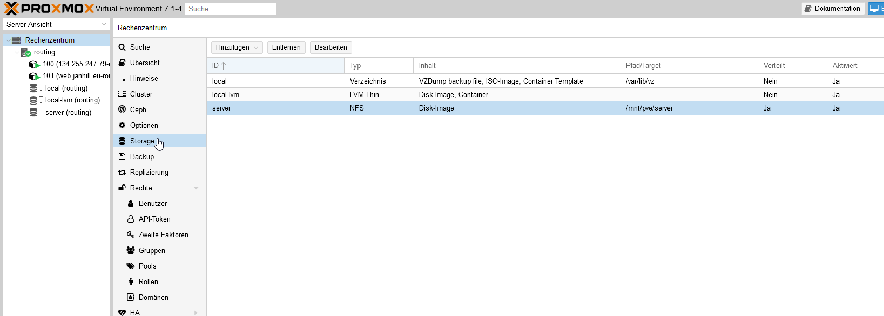
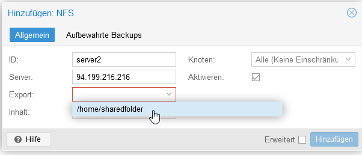
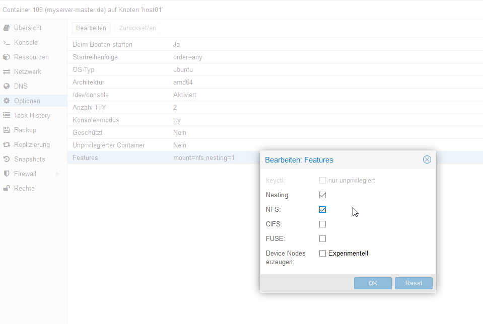

NFS Host and Client Setup in Proxmox¶
This guide will explain how to set up an NFS (Network File Sharing) server and add it as a remote storage in Proxmox.
Install NFS Server
First, log in to the LXC container or the machine where the NFS server will be hosted. Then update the package list and install NFS:
apt-get update apt-get install sudo -y sudo apt install nfs-kernel-server
Once installed, create a shared folder:
sudo mkdir /home/sharedfolder sudo chmod 777 /home/sharedfolder
Next, edit the
/etc/exportsfile to configure the shared directory for export:sudo nano /etc/exports
Add the following line (adjust the IP address and folder accordingly):
/home/sharedfolder 192.168.1.0/24(rw,sync,no_subtree_check)
Save the file and restart the NFS server:
sudo exportfs -ra sudo systemctl restart nfs-kernel-server
Configure NFS Storage in Proxmox
Now log into your Proxmox host (the machine that will receive the NFS storage) and navigate to:
Datacenter > Storage > Add > NFS
Here, enter the NFS server’s IP address and select the shared directory.
Choose the desired contents for the storage (ISO images, containers, backups, etc.) and click Add.
Set Permissions on LXC Container (If Applicable)
If the NFS share will be used in an LXC container, ensure that permissions for NFS usage are set correctly:
Check the NFS box under Options for the LXC container.
That’s it! You have successfully set up an NFS server and added it to Proxmox as remote storage.